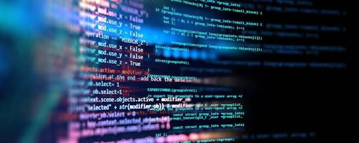

Welcome to the Software Development Website! We are going to learn some prerequisites for software development and
education before getting a job in the field.
Before learning Software Development, it's important to have a solid foundation in mathematics and problem-solving skills.
You can purchase this book about Software Development on Amazon: Software Development Book
Education
Education is a crucial aspect of software development. It provides the necessary knowledge and skills to excel in the field.
A strong educational background in computer science, programming languages, algorithms, and data structures is essential for aspiring software developers.
Education From me: I attended CCP(Community College of Philadelphia) to pursue an Associate Degree in Computer Science and attending Holy Family University to get a Bachlor's Degree.
CSCI Youtube Channels
There are many CSCI Youtube channels that provide valuable resources for learning software development.
These channels offer tutorials, coding exercises, and insights into industry trends. Some popular CSCI Youtube channels include "CS50," "Traversy Media," and "The Net Ninja."
Exploring these channels can enhance your understanding of software development concepts and help you stay updated with the latest advancements in the field.
Link to this channel: CSCI Youtube Channel
